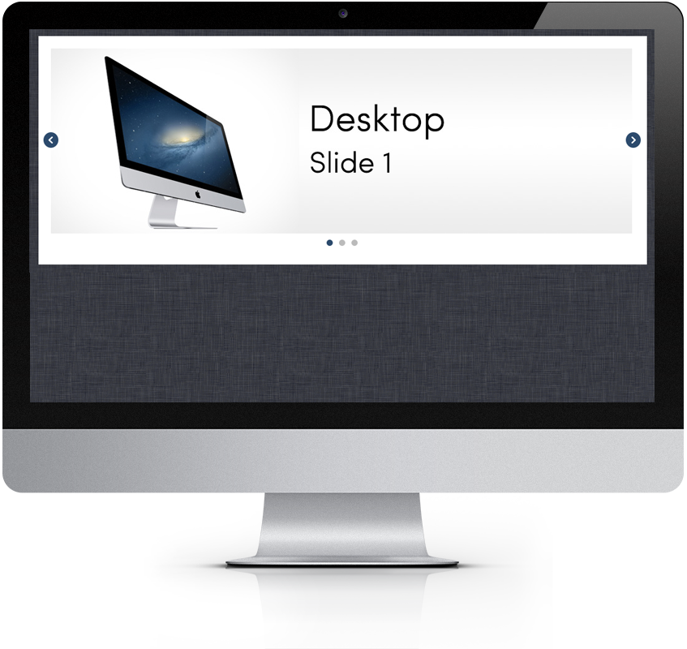
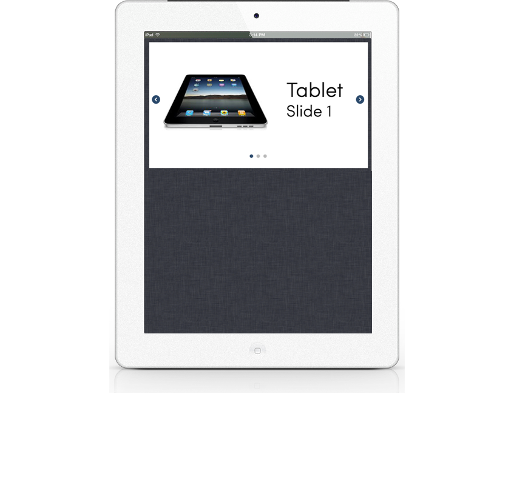
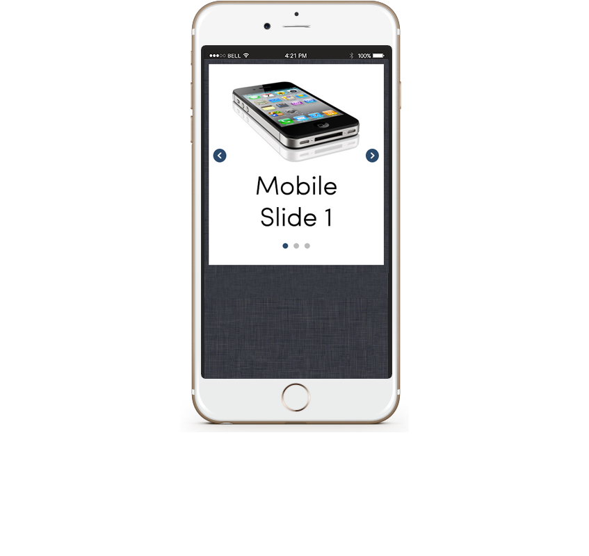

<!--Work Preview section-->
<section class="offset section">
			
	<!--Inner content-->
	<div class="innerContent">

		<!--Container-->
		<div class="container clearfix">
			<div class="sixteen columns">
				<div class="work-preview-close"></div>
			</div>
		</div>
		<!--Container-->
		
		<!--Container-->
		<div class="container clearfix">

			<div class="nine columns">

				<!--slider-->
				<div class="work-preview-slider clearfix flexslider" >

					<div>

						<ul class="slides">
							
							<li>
								
							</li>
							
							<li>
								
							</li>

							<li>
								
							</li>

						</ul>

					</div>
					
				</div>
				<!--slider-->

			</div>


			<div class="seven columns info">
				<h1 class="title">Web Component Development<br><span>Responsive</span></h1>
				<p>Instead of scaling the image, this responsive carousel swaps images per breakpoint. Using this technique allows the designer to layout each slide panel, at each breakpoint, with purpose and intent. The component has been cross browser/platform and device tested and is easily scalable.</p>

				<!-- <div class="social-icons">
					<ul>
						<li><i class="step fi-heart"></i><span>100</span></li>
						<li><i class="step fi-social-facebook"></i><span>620</span></li>
						<li><i class="step fi-social-twitter"></i><span>450</span></li>
						<li><i class="step fi-social-pinterest"></i><span>100</span></li>
					</ul>
				</div> -->

			</div>


		</div>
		<!--Container-->
	
	</div>
	<!--Inner content-->

	
</section>